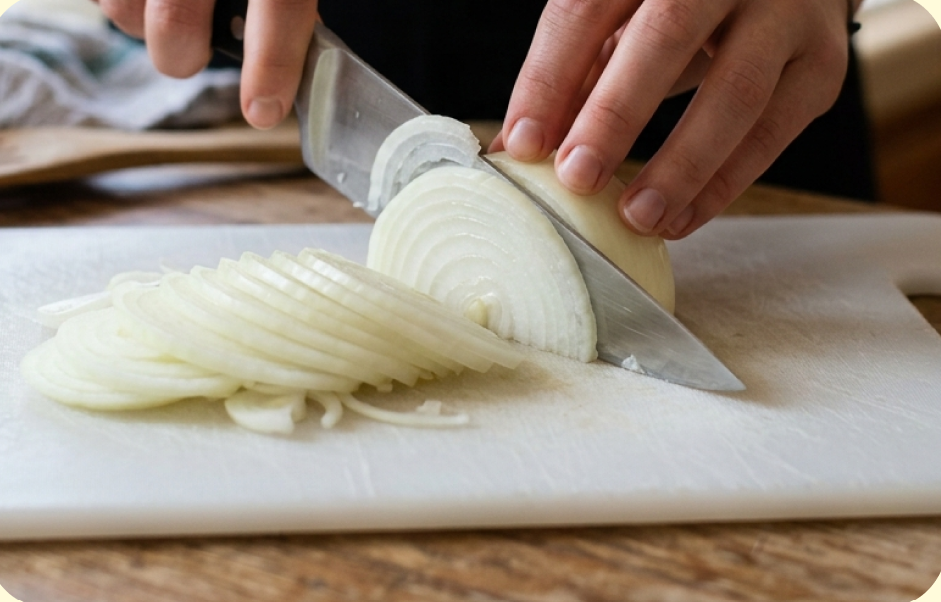
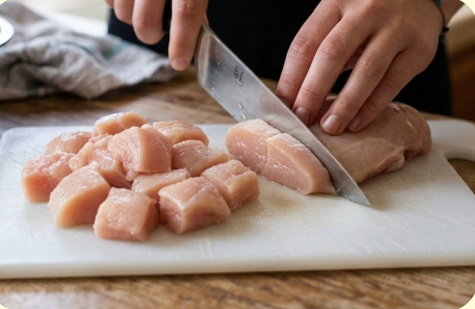
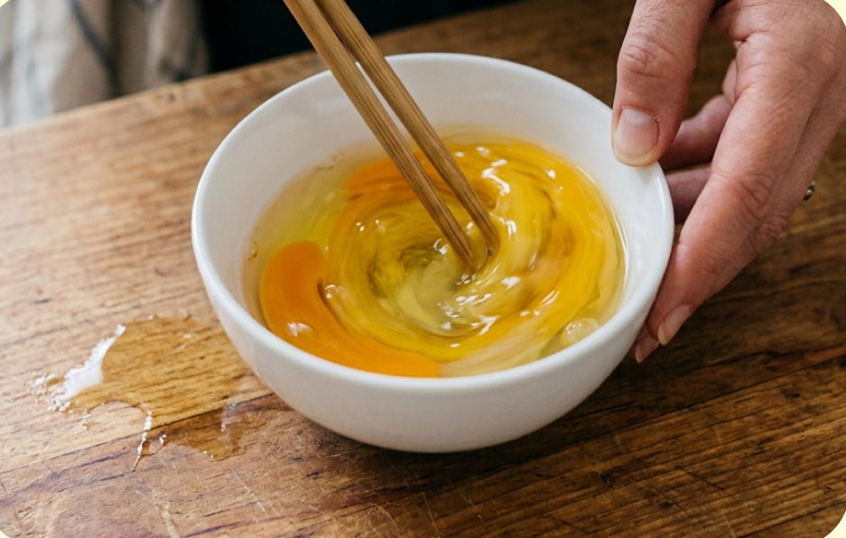
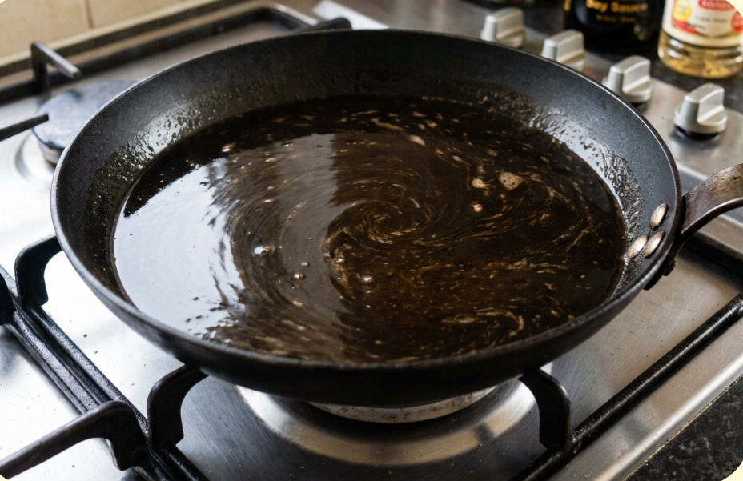
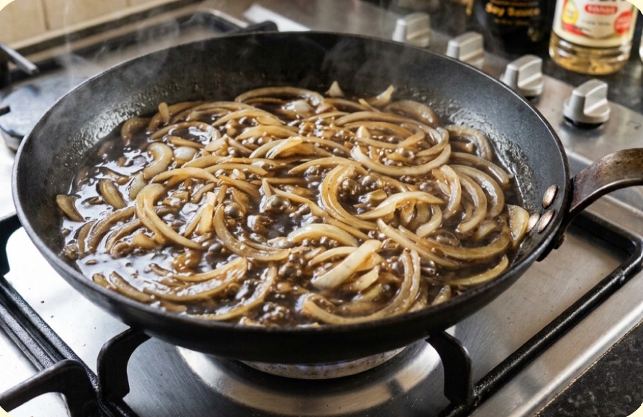
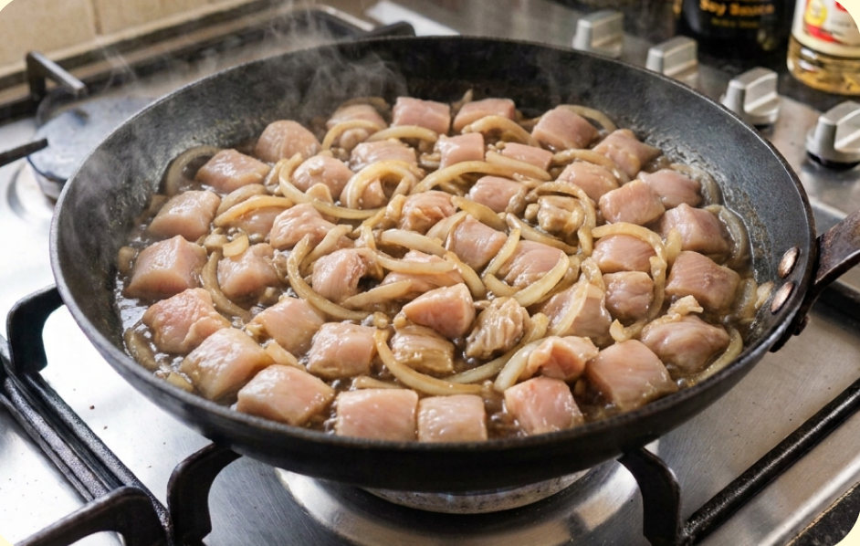
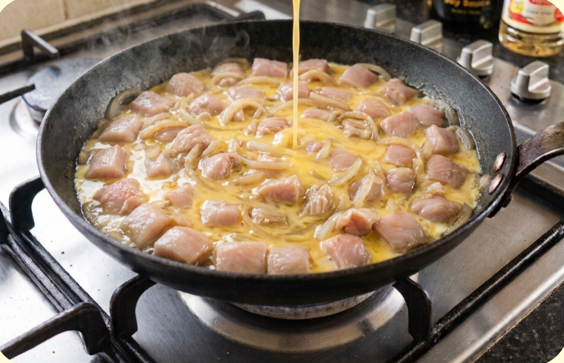
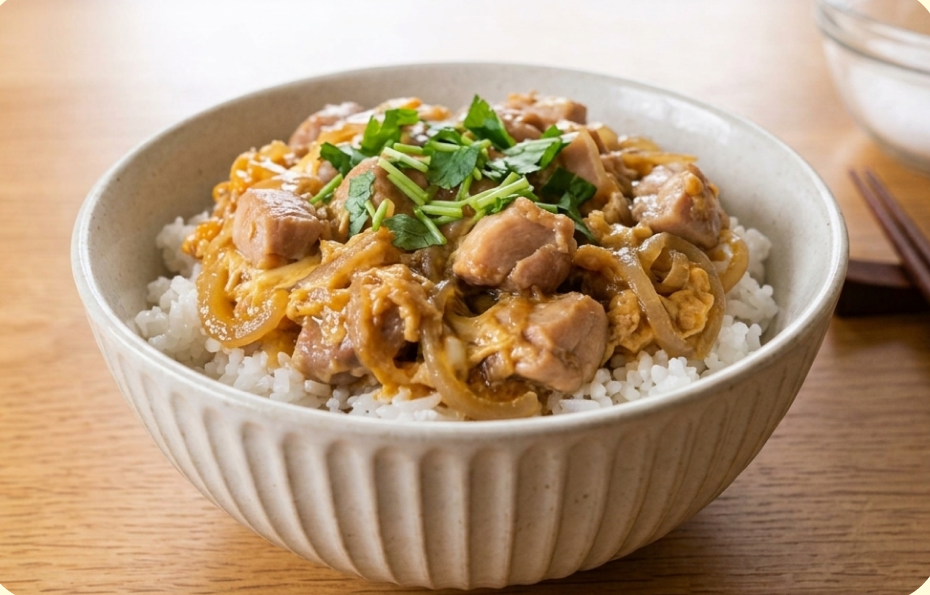

難易度３ ★★★
材料（一人分）
- ・ご飯茶碗１杯
- ・鶏もも肉100g
- ・玉ねぎ1/4個
- ・卵2個
- 合わせ調味料
- ・水50ml
- ・みりん
- ・料理酒
- ・砂糖
必要な道具
- ・フライパン
- ・包丁
- ・まな板
- ・小さめのボウル
- ・茶碗
- ・菜箸
- ・おたま
注目ポイント
 火加減に注意
火加減に注意 しっかり加熱
しっかり加熱 食器は清潔に
食器は清潔に 食中毒に注意
食中毒に注意
作り方
① 玉ねぎを5mmくらいの薄切りにします。厚すぎると火が通るまでに時間がかかるので、なるべく薄く切りましょう。

② 鶏もも肉を一口サイズに切ります。大きさを揃えると、火の通りが均一になります。生の鶏肉を触った後は、石鹸でしっかり手を洗いましょう。

③ 卵をボウルに割り入れ、菜箸で軽く混ぜます。白身を少し残るくらいで大丈夫です。混ぜすぎるとふんわり感が少なくなります。

④ フライパンに水、しょうゆ、みりん、料理酒、砂糖を入れます。 軽く混ぜてから中火にかけます。沸騰するまで待ちます。

⑤ 玉ねぎを入れ、中火で２～３分煮ます。 玉ねぎが少し透明になってきたらOKです。

⑥ 鶏肉をなるべく重ならないように並べます。 フタをして４～５分煮ます。一番厚い部分を切って、 中まで白くなっていれば火が通っています。 中心がピンク色なら、さらに１～２分焼きます。

⑦ まず卵の半分を全体に回しかけます。 ３０秒ほど待ってから、残りの卵を回しかけます。 フタをして３０秒～１分加熱します。 半熟なら３０秒ほど、しっかり火を通したいなら１分ほど加熱しましょう。

⑧ 茶碗に熱いご飯をよそいます。 その上に具と汁をそっとのせます。 お好みで刻みのりなどを散らしたら完成です。

調理のコツ
白身と黄身が完全に混ざると、
少し固い仕上がりになります。
白身が少し残るくらいで混ぜると、
ふんわりとした親子丼になります。
余熱が強いので、
火を止めた後にフタをして１分ほど蒸らすと、
さらにふんわり仕上がります。
卵を入れた後は
卵は火を入れ続けるほど固くなります。 少し半熟くらいで火を止めると、 ちょうど良く仕上がります。